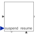
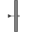

NormalOperationNormal operation of tank system (button start pressed) |

|
Diagram
{kind=link}
Parameters (5)
| nSuspend |
Value: 1 Type: Integer Description: Number of suspend ports |
|---|---|
| nResume |
Value: 1 Type: Integer Description: Number of resume ports |
| maxLevel |
Value: Type: Height (m) Description: Fill level of tank 1 |
| minLevel |
Value: Type: Height (m) Description: Lowest level of tank 1 and 2 |
| waitTime |
Value: Type: Time (s) Description: Wait time between operations |
Outputs (1)
| active |
Type: Boolean Description: = true if step is active, otherwise the step is not active |
|---|
Connectors (5)
Components (12)
| stateGraphRoot |
Type: CompositeStepState Description: Communication port between the CompositeStep and the steps within the CompositeStep |
|
|---|---|---|
| outerState |
Type: OuterState |
|
| innerState |
Type: InnerState |
|
| fillTank1 |
Type: Step |
|
|  | T1 |
Type: Transition |
| fillTank2 |
Type: Step |
|
| T3 |
Type: Transition |
|
| emptyTank2 |
Type: Step |
|
| wait1 |
Type: Step |
|
| T2 |
Type: Transition |
|
| wait2 |
Type: Step |
|
| T4 |
Type: Transition |
Used in Components (1)
|
Modelica.Fluid.Examples.ControlledTankSystem.Utilities Controller for tank system |